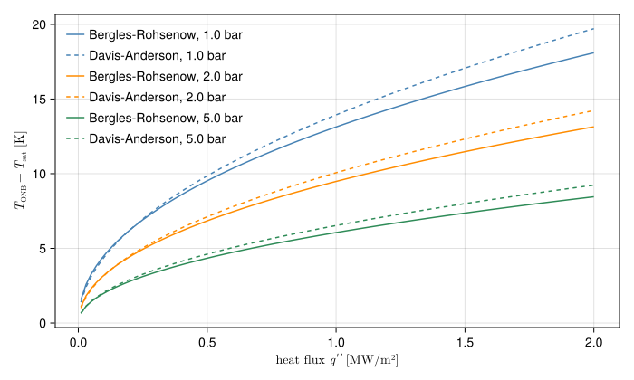

Onset of nucleate boiling
Onset of nucleate boiling (ONB) is the wall temperature at which vapour bubbles first grow on a heated surface in subcooled flow. Past it, heat goes from the wall partly into making bubbles, which collapse in the colder liquid further out. The wall runs cooler than single-phase convection alone would make it, and the bulk stays subcooled. ONB does not harm the fuel. It matters because it marks the end of single-phase heat transfer, and because many research reactors take "no boiling at the wall at nominal power" as a design criterion.
The physics
A surface holds microscopic cavities with trapped gas or vapour. A vapour nucleus of radius $r$ at a cavity mouth is in equilibrium only if the vapour inside is hot enough to balance surface tension. Combining the Laplace pressure $\Delta p = 2\sigma/r$ with the Clausius-Clapeyron relation gives the superheat it needs:
\[T_v - T_\text{sat} \approx \frac{2\sigma\,T_\text{sat}}{\rho_v\,h_{fg}\,r},\]
with $T_\text{sat}$ in kelvin. The nucleus grows if the liquid around its top is at least that hot. Near a heated wall the liquid temperature falls roughly linearly with distance from the wall, with slope $q''/k_l$. Hsu (Hsu, 1962) asked when the linear profile first touches the curve of required superheat over all cavity sizes. If cavities of every size are present, the tangency gives the wall superheat at ONB in closed form, as found by Davis and Anderson (Davis and Anderson, 1966):
\[T_w - T_\text{sat}\big|_\text{ONB} = \sqrt{\frac{8\,\sigma\,T_\text{sat}\,q''}{k_l\,\rho_v\,h_{fg}}}.\]
The superheat grows with the square root of the heat flux, and falls with pressure, mostly through $\rho_v$. Flow enters only indirectly: a faster flow needs a larger $q''$ to reach the same wall temperature.
The Bergles-Rohsenow correlation
Bergles and Rohsenow (Bergles and Rohsenow, 1964) solved the same tangency condition graphically with water properties over 15 to 2000 psia (about 1 to 138 bar) and fitted the result. In SI units, with $p$ in bar, $q''$ in W/m² and the superheat in K:
\[q''_\text{ONB} = 1082\,p^{1.156}\,\big(1.8\,(T_w - T_\text{sat})\big)^{2.16/p^{0.0234}},\]
which STREAM inverts for the wall temperature:
\[T_\text{ONB} = T_\text{sat} + 0.556\left(\frac{q''}{1082\,p^{1.156}}\right)^{0.463\,p^{0.0234}}.\]
It is written for water only, since the fit absorbs the water property values. Like the analysis behind it, it assumes cavities of all sizes are available, which holds for commercially finished metal surfaces. A very smooth surface, or a liquid that wets the surface well, can need more superheat than this, so the correlation tends to predict boiling early rather than late.
The figure compares the correlation with the Davis-Anderson expression evaluated with STREAM's water properties.
using STREAM, STREAM.Thresholds, CairoMakieq = range(1e4, 2e6; length=100) # wall heat flux [W/m²]fig = Figure(size=(700, 420))ax = Axis(fig[1, 1]; xlabel=L"heat flux $q''$ [MW/m²]", ylabel=L"$T_\mathrm{ONB} - T_\mathrm{sat}$ [K]")for (p, color) in ((1.0e5, :steelblue), (2.0e5, :darkorange), (5.0e5, :seagreen)) T_sat = Tsat(H2O, p) sat = H2O(T_sat, p) # water properties at saturation br = [bergles_rohsenow_t_onb(p, qi, T_sat) - T_sat for qi in q] da = [sqrt(8 * sat.σ * (T_sat + 273.15) * qi / (sat.κ * sat.ρᵥ * sat.hfg)) for qi in q] lines!(ax, q ./ 1e6, br; color, label="Bergles-Rohsenow, $(p / 1e5) bar") lines!(ax, q ./ 1e6, da; color, linestyle=:dash, label="Davis-Anderson, $(p / 1e5) bar")endaxislegend(ax; position=:lt, framevisible=false)fig
The two agree within a kelvin or so, as they should: one is a fit to the other's tangency construction. At 1 bar and 1 MW/m² the wall boils about 13 K above saturation, and doubling the pressure lowers that by about a quarter.
How STREAM uses it
ONB appears in three places:
- As an observable of every channel. Each cell carries
T_ONB, evaluated at the cell's static pressurePand its total wall heat flux (both faces over the heated perimeter).T_ONB - T_wallis then a margin you can read off any solution. A cell whose wall is cooler than its coolant, so that the flux is negative, reports the saturation temperature, the correlation's zero-flux limit. - As a heat transfer switch.
HTC.SubcooledBoilingcompares the wall with the ONB temperature computed from the single-phase flux, and above it scales the single-phase coefficient by the partial boiling factor. See Wall heat transfer. - As a threshold.
bergles_rohsenow_t_onbon aChannelStateuses the flux of one face (the larger one by default) rather than the total, because boiling starts on the hotter face. A face that is not heating the coolant, as can happen after a scram when the coolant rising through the core is hotter than the plate, reports no onset (Inf).
The pressure is the local static pressure, not the inlet pressure. In a channel with downward flow the pressure rises along the flow by the hydrostatic head, so the saturation temperature and $T_\text{ONB}$ rise with it. In upward flow both fall towards the outlet, which is why the outlet of an upflow channel is often where boiling starts.
References
- Bergles, A. E. and Rohsenow, W. M. (1964). The determination of forced-convection surface-boiling heat transfer. Journal of Heat Transfer 86, 365–372.
- Davis, E. J. and Anderson, G. H. (1966). The incipience of nucleate boiling in forced convection flow. AIChE Journal 12, 774–780.
- Hsu, Y. Y. (1962). On the size range of active nucleation cavities on a heating surface. Journal of Heat Transfer 84, 207–213.